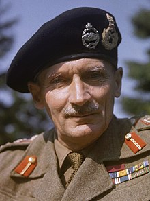

During the Western Desert campaign of the Second World War, Bernard Montgomery commanded the British Eighth Army from August 1942, through the Second Battle of El Alamein and on to the final Allied victory in Tunisia in May 1943. He subsequently commanded the British Eighth Army during the Allied invasion of Sicily and the Allied invasion of Italy and was in command of all Allied ground forces during the Battle of Normandy (Operation Overlord), from D-Day on 6 June 1944 until 1 September 1944. He then continued in command of the 21st Army Group for the rest of the North West Europe campaign, including the failed attempt to cross the Rhine during Operation Market Garden.
